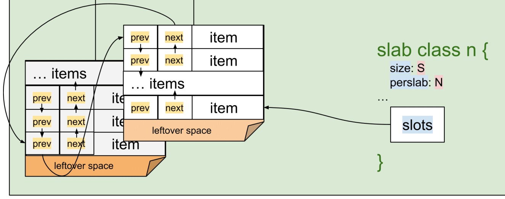

<!DOCTYPE html>
<html>
<head><meta name="generator" content="Hexo 3.9.0">
  <meta charset="utf-8">
  
  <title>Holmes He</title>

  

  <meta name="viewport" content="width=device-width, initial-scale=1, maximum-scale=1">
  <meta name="viewport" content="width=device-width, initial-scale=1, maximum-scale=1">
  
  <meta name="keywords" content="memcachedslab allocatorcachesource code analysis源码源码分析">
  
  
  
  
  <meta name="description" content="这次我们继续看用于 板 的内存是如何分配的。 首先我们继续看 slabs_init 的两个实参。第一个是 settings.maxbytes - 控制这个 Memcached 实例可以使用的总内存大小。在传入 slabs_init 之前，这个参数被赋值为全局变量 mem_limit。">
<meta name="keywords" content="memcached,slab allocator,cache,source code analysis,源码,源码分析">
<meta property="og:type" content="article">
<meta property="og:title" content="理解 Memcached 源码- Slab II">
<meta property="og:url" content="https://holmeshe.me/cn/understanding-memcached-source-code-II/index.html">
<meta property="og:site_name" content="Holmes He">
<meta property="og:description" content="这次我们继续看用于 板 的内存是如何分配的。 首先我们继续看 slabs_init 的两个实参。第一个是 settings.maxbytes - 控制这个 Memcached 实例可以使用的总内存大小。在传入 slabs_init 之前，这个参数被赋值为全局变量 mem_limit。">
<meta property="og:locale" content="default">
<meta property="og:image" content="https://holmeshe.me/gallery/slab_alloc.png">
<meta property="og:image" content="https://holmeshe.me/gallery/slab_free_list.png">
<meta property="og:updated_time" content="2020-12-22T10:48:38.109Z">
<meta name="twitter:card" content="summary">
<meta name="twitter:title" content="理解 Memcached 源码- Slab II">
<meta name="twitter:description" content="这次我们继续看用于 板 的内存是如何分配的。 首先我们继续看 slabs_init 的两个实参。第一个是 settings.maxbytes - 控制这个 Memcached 实例可以使用的总内存大小。在传入 slabs_init 之前，这个参数被赋值为全局变量 mem_limit。">
<meta name="twitter:image" content="https://holmeshe.me/gallery/slab_alloc.png">
  
  <link rel="icon" href="/gallery/air-balloon.svg">
  
    <link href="//fonts.googleapis.com/css?family=Source+Code+Pro" rel="stylesheet" type="text/css">
  
  <link href="https://fonts.googleapis.com/css?family=Open+Sans|Montserrat:700" rel="stylesheet" type="text/css">
  <link href="https://fonts.googleapis.com/css?family=Roboto:400,300,300italic,400italic" rel="stylesheet" type="text/css">
  <link href="/css/font-awesome.min.css" rel="stylesheet">
  <style type="text/css">
    @font-face{font-family:futura-pt;src:url(https://use.typekit.net/af/9749f0/00000000000000000001008f/27/l?subset_id=2&fvd=n5) format("woff2");font-weight:500;font-style:normal;}
    @font-face{font-family:futura-pt;src:url(https://use.typekit.net/af/90cf9f/000000000000000000010091/27/l?subset_id=2&fvd=n7) format("woff2");font-weight:500;font-style:normal;}
    @font-face{font-family:futura-pt;src:url(https://use.typekit.net/af/8a5494/000000000000000000013365/27/l?subset_id=2&fvd=n4) format("woff2");font-weight:lighter;font-style:normal;}
    @font-face{font-family:futura-pt;src:url(https://use.typekit.net/af/d337d8/000000000000000000010095/27/l?subset_id=2&fvd=i4) format("woff2");font-weight:400;font-style:italic;}</style>
    
  <link rel="stylesheet" id="athemes-headings-fonts-css" href="//fonts.googleapis.com/css?family=Yanone+Kaffeesatz%3A200%2C300%2C400%2C700&amp;ver=4.6.1" type="text/css" media="all">

  <link rel="stylesheet" id="athemes-headings-fonts-css" href="//fonts.googleapis.com/css?family=Oswald%3A300%2C400%2C700&amp;ver=4.6.1" type="text/css" media="all">
  <link rel="stylesheet" href="/css/style.css">

  <script src="/js/jquery-3.1.1.min.js"></script>

  <!-- Bootstrap core CSS -->
  <link rel="stylesheet" href="/css/bootstrap.css">
  <link rel="stylesheet" href="/css/fashion.css">
  <link rel="stylesheet" href="/css/glyphs.css">

</head>
</html>


  <body data-spy="scroll" data-target="#toc" data-offset="50">


  


<header id="allheader" class="site-header" role="banner" 
   
>
  <div class="clearfix container">
      <div class="site-branding">

          <h1 class="site-title">
            
              <a href="/" rel="home" >
                
              </a>
            
          </h1>
          
          <div class="site-description">
            \{C}0de<t>a1k(s) =>
            <text id="message">
              
            </text>
            ( ͡° ͜ʖ ͡°)
            <a class='ext-link' href="/atom.xml">
              <i class="fas fa-rss fa-lg"></i>
            </a>
          </div>
            
          <nav id="main-navigation" class="main-navigation" role="navigation">
            <a class="nav-open">Menu</a>
            <a class="nav-close">Close</a>

            <div class="clearfix sf-menu">
              <ul id="main-nav" class="menu sf-js-enabled sf-arrows"  style="touch-action: pan-y;">
                    
                      <li class="menu-item menu-item-type-custom menu-item-object-custom menu-item-home menu-item-1663"> <a class="" href="/">Home</a> </li>
                    
                      <li class="menu-item menu-item-type-custom menu-item-object-custom menu-item-home menu-item-1663"> <a class="" href="/categories">Series</a> </li>
                    
              </ul>
            </div>
          </nav>

      </div>
  </div>
</header>


  <div id="container">
    <div id="wrap">
            
      <div id="content" class="outer">
        
          <section id="main" style="float:none;"><article id="post-cn/understanding-memcached-source-code-II" style="width: 66%; float:left;" class="article article-type-post" itemscope itemprop="blogPost" >
  <div id="articleInner" class="clearfix post-1016 post type-post status-publish format-standard has-post-thumbnail hentry category-template-2 category-uncategorized tag-codex tag-edge-case tag-featured-image tag-image tag-template">
    
    
      <header class="article-header">
        
  
    <h1 class="thumb" class="article-title" itemprop="name">
      理解 Memcached 源码- Slab II
    </h1>
  

      </header>
    
    <div class="article-meta">
      
	<a href="/cn/understanding-memcached-source-code-II/" class="article-date">
	  <time datetime="2019-03-23T22:23:00.000Z" itemprop="datePublished">March 24, 2019</time>
	</a>

      
	<span class="ico-folder"></span>
    <a class="article-category-link" href="/categories/Memcached-源码分析/">Memcached 源码分析</a>
 
      
    </div>
    
    <div class="article-entry" itemprop="articleBody">
      
        <p>这次我们继续看用于 <strong>板</strong> 的内存是如何分配的。</p>
<p>首先我们继续看 <a href="#" onclick="return false;" data-toggle="collapse" data-target="#slabs_init">slabs_init</a> 的两个实参。第一个是 <a href="#" onclick="return false;" data-toggle="collapse" data-target="#settings_maxbytes">settings.maxbytes</a> - 控制这个 <strong>Memcached</strong> 实例可以使用的总内存大小。在传入 <a href="#" onclick="return false;" data-toggle="collapse" data-target="#slabs_init">slabs_init</a> 之前，这个参数被赋值为全局变量 <a href="#" onclick="return false;" data-toggle="collapse" data-target="#mem_limit">mem_limit</a>。</p>
<a id="more"></a>
<div id="slabs_init" class="collapse"><br><figure class="highlight c"><table><tr><td class="code"><pre><span class="line"><span class="function"><span class="keyword">void</span> <span class="title">slabs_init</span><span class="params">(<span class="keyword">const</span> <span class="keyword">size_t</span> limit, <span class="keyword">const</span> <span class="keyword">double</span> factor, <span class="keyword">const</span> <span class="keyword">bool</span> prealloc, <span class="keyword">const</span> <span class="keyword">uint32_t</span> *slab_sizes)</span> </span>&#123;</span><br><span class="line">...</span><br><span class="line">    mem_limit = limit; <span class="comment">// scr: here</span></span><br><span class="line">...</span><br></pre></td></tr></table></figure><br><center style="line-height:0.8;margin:0;"><text style="color:black;font-weight:bold;">slabs_init@memcached.c</text></center><br></div>

<div id="settings_maxbytes" class="collapse"><br><figure class="highlight c"><table><tr><td class="code"><pre><span class="line">...</span><br><span class="line">  settings.maxbytes = <span class="number">64</span> * <span class="number">1024</span> * <span class="number">1024</span>; <span class="comment">/* default is 64MB */</span></span><br><span class="line">...</span><br><span class="line">        <span class="keyword">case</span> <span class="string">'m'</span>:</span><br><span class="line">            settings.maxbytes = ((<span class="keyword">size_t</span>)atoi(optarg)) * <span class="number">1024</span> * <span class="number">1024</span>;</span><br><span class="line">            <span class="keyword">break</span>;</span><br><span class="line">...</span><br></pre></td></tr></table></figure><br><center style="line-height:0.8;margin:0;"><text style="color:black;font-weight:bold;">memcached.c:210,5493</text></center><br></div>

<div id="mem_limit" class="collapse"><br><figure class="highlight c"><table><tr><td class="code"><pre><span class="line"><span class="keyword">static</span> <span class="keyword">size_t</span> mem_limit = <span class="number">0</span>;</span><br></pre></td></tr></table></figure><br><center style="line-height:0.8;margin:0;"><text style="color:black;font-weight:bold;">memcached.c:43</text></center><br></div>

<p>另外一个怎是 <a href="#" onclick="return false;" data-toggle="collapse" data-target="#preallocate">preallocate</a>。它决定了是否为（各个）<strong>板组</strong> 预分配 内存。这个参数的值由 <code>L</code> 命令行参数来决定。</p>
<div id="preallocate" class="collapse"><br><figure class="highlight c"><table><tr><td class="code"><pre><span class="line">...</span><br><span class="line">   <span class="keyword">bool</span> preallocate = <span class="literal">false</span>;</span><br><span class="line">...</span><br><span class="line">        <span class="keyword">case</span> <span class="string">'L'</span> :</span><br><span class="line">            <span class="keyword">if</span> (enable_large_pages() == <span class="number">0</span>) &#123;</span><br><span class="line">                preallocate = <span class="literal">true</span>;</span><br><span class="line">            &#125; <span class="keyword">else</span> &#123;</span><br><span class="line">                <span class="built_in">fprintf</span>(<span class="built_in">stderr</span>, <span class="string">"Cannot enable large pages on this system\n"</span></span><br><span class="line">                    <span class="string">"(There is no Linux support as of this version)\n"</span>);</span><br><span class="line">                <span class="keyword">return</span> <span class="number">1</span>;</span><br><span class="line">            &#125;</span><br><span class="line">            <span class="keyword">break</span>;</span><br><span class="line">...</span><br></pre></td></tr></table></figure><br><center style="line-height:0.8;margin:0;"><text style="color:black;font-weight:bold;">main@memcached.c:5350,5597</text></center><br></div>

<p>下面我们来看 slabs 的内存分配函数。</p>
<h1 id="新建板"><a href="#新建板" class="headerlink" title="新建板"></a>新建板</h1><h2 id="do-slabs-newslab"><a href="#do-slabs-newslab" class="headerlink" title="do_slabs_newslab"></a>do_slabs_newslab</h2><p>具体来说，这个函数用于给 <strong>板组</strong> 分配大小为1M的内存块。而 <strong>板组</strong> 由参数 <code>id</code> 指定。</p>
<figure class="highlight c"><table><tr><td class="code"><pre><span class="line"><span class="function"><span class="keyword">static</span> <span class="keyword">int</span> <span class="title">do_slabs_newslab</span><span class="params">(<span class="keyword">const</span> <span class="keyword">unsigned</span> <span class="keyword">int</span> id)</span> </span>&#123;</span><br><span class="line">    <span class="keyword">slabclass_t</span> *p = &amp;slabclass[id]; <span class="comment">// scr: ----------------------------&gt; 1)</span></span><br><span class="line">    <span class="keyword">slabclass_t</span> *g = &amp;slabclass[SLAB_GLOBAL_PAGE_POOL]; <span class="comment">// scr: ---------&gt; *)</span></span><br><span class="line">    <span class="keyword">int</span> len = settings.slab_reassign ? settings.item_size_max <span class="comment">// scr: ---&gt; 2)</span></span><br><span class="line">        : p-&gt;size * p-&gt;perslab;</span><br><span class="line">    <span class="keyword">char</span> *ptr;</span><br><span class="line"></span><br><span class="line">    <span class="keyword">if</span> ((mem_limit &amp;&amp; mem_malloced + len &gt; mem_limit &amp;&amp; p-&gt;slabs &gt; <span class="number">0</span> <span class="comment">// -&gt; 3)</span></span><br><span class="line">         &amp;&amp; g-&gt;slabs == <span class="number">0</span>)) &#123;</span><br><span class="line">        mem_limit_reached = <span class="literal">true</span>;</span><br><span class="line">        MEMCACHED_SLABS_SLABCLASS_ALLOCATE_FAILED(id);</span><br><span class="line">        <span class="keyword">return</span> <span class="number">0</span>;</span><br><span class="line">    &#125;</span><br><span class="line"></span><br><span class="line">    <span class="keyword">if</span> ((grow_slab_list(id) == <span class="number">0</span>) || <span class="comment">// scr: ----------------------------&gt; 4)</span></span><br><span class="line">        (((ptr = get_page_from_global_pool()) == <span class="literal">NULL</span>) &amp;&amp; <span class="comment">// scr: -------&gt; *)</span></span><br><span class="line">        ((ptr = memory_allocate((<span class="keyword">size_t</span>)len)) == <span class="number">0</span>))) &#123; <span class="comment">// scr: ---------&gt; 5)</span></span><br><span class="line"></span><br><span class="line">        MEMCACHED_SLABS_SLABCLASS_ALLOCATE_FAILED(id);</span><br><span class="line">        <span class="keyword">return</span> <span class="number">0</span>;</span><br><span class="line">    &#125;</span><br><span class="line"></span><br><span class="line">    <span class="built_in">memset</span>(ptr, <span class="number">0</span>, (<span class="keyword">size_t</span>)len);</span><br><span class="line">    split_slab_page_into_freelist(ptr, id); <span class="comment">// scr: ---------------------&gt; 6)</span></span><br><span class="line"></span><br><span class="line">    p-&gt;slab_list[p-&gt;slabs++] = ptr; <span class="comment">// scr: -----------------------------&gt; 7)</span></span><br><span class="line">    MEMCACHED_SLABS_SLABCLASS_ALLOCATE(id);</span><br><span class="line"></span><br><span class="line">    <span class="keyword">return</span> <span class="number">1</span>;</span><br><span class="line">&#125;</span><br></pre></td></tr></table></figure>
<center style="line-height:0.8;margin:0;"><text style="color:black;font-weight:bold;">do_slabs_newslab@slabs.c</text></center>
<p>1）<code>slabclass[id]</code> 是 <strong>板组</strong> 的数据结构。<a href="../understanding-memcached-source-code-I/#Module-initialization">上篇</a>讨论了这个数组的初始化。</p>
<p>2）<a href="#" onclick="return false;" data-toggle="collapse" data-target="#settings_slab_reassign">settings.slab_reassign</a> 决定是否启用 再平衡 策略。如果启用，未使用的 <strong>板</strong> 不会被立即释放，而是分配给其他 <strong>板组</strong> 使用，这就产生了一个问题，即所有 <strong>板组</strong> 都需要使用统一大小的 <strong>板</strong>。所以这个设置同时也决定了是否使用 <em>同种板</em> （大小为 <code>settings.item_size_max</code>，或者上述的1M），还是 <em>异种板</em> （<code>p-&gt;size * p-&gt;perslab</code>）。除了用命令行参数 <a href="#" onclick="return false;" data-toggle="collapse" data-target="#settings_slab_reassign">"slab_reassign"</a> 以外，<a href="#" onclick="return false;" data-toggle="collapse" data-target="#modern">"modern"</a> 也会设置这个值，而本文也会用1M作为 <strong>板</strong> 的大小。</p>
<div id="settings_slab_reassign" class="collapse"><br><figure class="highlight c"><table><tr><td class="code"><pre><span class="line">...</span><br><span class="line">    settings.slab_reassign = <span class="literal">false</span>;</span><br><span class="line">...</span><br><span class="line">            <span class="keyword">case</span> SLAB_REASSIGN:</span><br><span class="line">                settings.slab_reassign = <span class="literal">true</span>;</span><br><span class="line">            <span class="keyword">break</span>;</span><br><span class="line">...</span><br></pre></td></tr></table></figure><br><center style="line-height:0.8;margin:0;"><text style="color:black;font-weight:bold;">main@memcached.c:238,5694</text></center><br></div>

<div id="modern" class="collapse"><br><figure class="highlight c"><table><tr><td class="code"><pre><span class="line">            <span class="keyword">case</span> MODERN:</span><br><span class="line">                <span class="comment">/* Modernized defaults. Need to add equivalent no_* flags</span></span><br><span class="line"><span class="comment">                 * before making truly default. */</span></span><br><span class="line">                settings.slab_reassign = <span class="literal">true</span>;</span><br><span class="line">                settings.slab_automove = <span class="number">1</span>;</span><br><span class="line">...</span><br><span class="line">            <span class="keyword">break</span>;</span><br></pre></td></tr></table></figure><br><center style="line-height:0.8;margin:0;"><text style="color:black;font-weight:bold;">main@memcached.c:5820</text></center><br></div>

<a href="#" id="nb_rebalancing" style="visibility: hidden"></a>
<p>N.b. *, <em>rebalancing mechanism</em> will be discussed later when we have a better understanding of the LRU module. </p>
<a href="#" id="do_slabs_newslab_mem_limit" style="visibility: hidden"></a>
<p>3）检查内存使用是否超出上线。</p>
<p>4）<a href="#" onclick="return false;" data-toggle="collapse" data-target="#grow_slab_list">grow_slab_list</a> 检查是否增长 <a href="../understanding-memcached-source-code-I/#core_ds">slabclass_t.slab_list</a>，如果需要，则增长之。</p>
<div id="grow_slab_list" class="collapse"><br><figure class="highlight c"><table><tr><td class="code"><pre><span class="line"><span class="function"><span class="keyword">static</span> <span class="keyword">int</span> <span class="title">grow_slab_list</span> <span class="params">(<span class="keyword">const</span> <span class="keyword">unsigned</span> <span class="keyword">int</span> id)</span> </span>&#123;</span><br><span class="line">    <span class="keyword">slabclass_t</span> *p = &amp;slabclass[id];</span><br><span class="line">    <span class="keyword">if</span> (p-&gt;slabs == p-&gt;list_size) &#123;</span><br><span class="line">        <span class="keyword">size_t</span> new_size =  (p-&gt;list_size != <span class="number">0</span>) ? p-&gt;list_size * <span class="number">2</span> : <span class="number">16</span>;</span><br><span class="line">        <span class="keyword">void</span> *new_list = <span class="built_in">realloc</span>(p-&gt;slab_list, new_size * <span class="keyword">sizeof</span>(<span class="keyword">void</span> *));</span><br><span class="line">        <span class="keyword">if</span> (new_list == <span class="number">0</span>) <span class="keyword">return</span> <span class="number">0</span>;</span><br><span class="line">        p-&gt;list_size = new_size;</span><br><span class="line">        p-&gt;slab_list = new_list;</span><br><span class="line">    &#125;</span><br><span class="line">    <span class="keyword">return</span> <span class="number">1</span>;</span><br><span class="line">&#125;</span><br></pre></td></tr></table></figure><br><center style="line-height:0.8;margin:0;"><text style="color:black;font-weight:bold;">grow_slab_list@slabs.c</text></center><br></div>

<p>5）<a href="#" onclick="return false;" data-toggle="collapse" data-target="#memory_allocate">memory_allocate</a> 是真正分配 <strong>板</strong> 内存的函数。如上述，这里的 <code>len</code> 是1M。</p>
<div id="memory_allocate" class="collapse"><br><figure class="highlight c"><table><tr><td class="code"><pre><span class="line"><span class="function"><span class="keyword">static</span> <span class="keyword">void</span> *<span class="title">memory_allocate</span><span class="params">(<span class="keyword">size_t</span> size)</span> </span>&#123;</span><br><span class="line">    <span class="keyword">void</span> *ret;</span><br><span class="line"></span><br><span class="line">    <span class="keyword">if</span> (mem_base == <span class="literal">NULL</span>) &#123;</span><br><span class="line">        <span class="comment">/* We are not using a preallocated large memory chunk */</span></span><br><span class="line">        ret = <span class="built_in">malloc</span>(size);</span><br><span class="line">    &#125; <span class="keyword">else</span> &#123; <span class="comment">// scr: when preallocate is set to true</span></span><br><span class="line">...</span><br></pre></td></tr></table></figure><br><center style="line-height:0.8;margin:0;"><text style="color:black;font-weight:bold;">memory_allocate@slabs.c</text></center><br></div>

<p>6）<code>split_slab_page_into_freelist</code> 初始化 （或者是 free）刚刚分配的 <strong>板</strong> 内存用作对象存储。这个函数会在下一节讨论。</p>
<p>7) 将刚刚分配的 <strong>板</strong> 加入到 <a href="../understanding-memcached-source-code-I/#core_ds">slabclass_t.slab_list</a>.</p>
<p>下图总结了这个过程（我们想象 <code>do_slabs_newslab(n)</code> 被调用了两次）</p>
<p></p>
<p>接下来我们来看在第6）步中一块 <strong>板</strong> 是如何被初始化的。</p>
<h2 id="split-slab-page-into-freelist"><a href="#split-slab-page-into-freelist" class="headerlink" title="split_slab_page_into_freelist"></a>split_slab_page_into_freelist</h2><figure class="highlight c"><table><tr><td class="code"><pre><span class="line"><span class="function"><span class="keyword">static</span> <span class="keyword">void</span> <span class="title">split_slab_page_into_freelist</span><span class="params">(<span class="keyword">char</span> *ptr, <span class="keyword">const</span> <span class="keyword">unsigned</span> <span class="keyword">int</span> id)</span> </span>&#123;</span><br><span class="line">    <span class="keyword">slabclass_t</span> *p = &amp;slabclass[id];</span><br><span class="line">    <span class="keyword">int</span> x;</span><br><span class="line">    <span class="keyword">for</span> (x = <span class="number">0</span>; x &lt; p-&gt;perslab; x++) &#123;</span><br><span class="line">        do_slabs_free(ptr, <span class="number">0</span>, id);</span><br><span class="line">        ptr += p-&gt;size;</span><br><span class="line">    &#125;</span><br><span class="line">&#125;</span><br></pre></td></tr></table></figure>
<center style="line-height:0.8;margin:0;"><text style="color:black;font-weight:bold;">split_slab_page_into_freelist@slabs.c</text></center>
<p>这个函数会遍历 <strong>板</strong> 里的所有 <strong>块</strong>（<a href="../understanding-memcached-source-code-I/#core_ds">slabclass_t.size</a>），然后调用 <code>do_slabs_free</code> 来初始化每个 <strong>块</strong> 的元数据。换一个说法，就是 “拆分 slab到待分配列表”-“split a slab into item free list”。你也许已经猜到了，这个 <em>待分配列表</em> 会被直接用于 <strong>对象</strong>分配，这个过程后面会详细讨论。</p>
<h2 id="do-slabs-free"><a href="#do-slabs-free" class="headerlink" title="do_slabs_free"></a>do_slabs_free</h2><figure class="highlight c"><table><tr><td class="code"><pre><span class="line"><span class="function"><span class="keyword">static</span> <span class="keyword">void</span> <span class="title">do_slabs_free</span><span class="params">(<span class="keyword">void</span> *ptr, <span class="keyword">const</span> <span class="keyword">size_t</span> size, <span class="keyword">unsigned</span> <span class="keyword">int</span> id)</span> </span>&#123;</span><br><span class="line">    <span class="keyword">slabclass_t</span> *p;</span><br><span class="line">    item *it;</span><br><span class="line">...</span><br><span class="line">    p = &amp;slabclass[id];</span><br><span class="line"></span><br><span class="line">    it = (item *)ptr;</span><br><span class="line">    it-&gt;it_flags = ITEM_SLABBED; <span class="comment">// scr: ---------------&gt; 1)</span></span><br><span class="line">    it-&gt;slabs_clsid = <span class="number">0</span>;</span><br><span class="line">    it-&gt;prev = <span class="number">0</span>; <span class="comment">// scr: ------------------------------&gt; 2)</span></span><br><span class="line">    it-&gt;next = p-&gt;slots;</span><br><span class="line">    <span class="keyword">if</span> (it-&gt;next) it-&gt;next-&gt;prev = it;</span><br><span class="line">    p-&gt;slots = it;</span><br><span class="line"></span><br><span class="line">    p-&gt;sl_curr++; <span class="comment">// scr: ------------------------------&gt; 3)</span></span><br><span class="line">    p-&gt;requested -= size;</span><br><span class="line">    <span class="keyword">return</span>;</span><br><span class="line">&#125;</span><br></pre></td></tr></table></figure>
<center style="line-height:0.8;margin:0;"><text style="color:black;font-weight:bold;">do_slabs_free@slabs.c</text></center>
<p>技术上讲，这个函数处理的 <a href="#" onclick="return false;" data-toggle="collapse" data-target="#item">元数据</a> 元数据存在于每个 <strong>块</strong>的开始。</p>
<div id="item" class="collapse"><br><figure class="highlight c"><table><tr><td class="code"><pre><span class="line"><span class="keyword">typedef</span> <span class="class"><span class="keyword">struct</span> _<span class="title">stritem</span> &#123;</span></span><br><span class="line">    <span class="comment">/* Protected by LRU locks */</span></span><br><span class="line">    <span class="class"><span class="keyword">struct</span> _<span class="title">stritem</span> *<span class="title">next</span>;</span></span><br><span class="line">    <span class="class"><span class="keyword">struct</span> _<span class="title">stritem</span> *<span class="title">prev</span>;</span></span><br><span class="line">...</span><br><span class="line">    <span class="keyword">uint8_t</span>         it_flags;   <span class="comment">/* ITEM_* above */</span></span><br><span class="line">    <span class="keyword">uint8_t</span>         slabs_clsid;<span class="comment">/* which slab class we're in */</span></span><br><span class="line">...</span><br><span class="line">&#125; item;</span><br></pre></td></tr></table></figure><br><center style="line-height:0.8;margin:0;"><text style="color:black;font-weight:bold;">main@memcached.c:5820</text></center><br></div>

<p>1）初始化一些域。这里 <a href="#" onclick="return false;" data-toggle="collapse" data-target="#item">item</a> 是另一个核心数据结构，后续会讨论。</p>
<p>2）将 <strong>item</strong> 加入到上述的 待分配列表 ，并且更新链表表头，<a href="../understanding-memcached-source-code-I/#core_ds">slabclass_t.slots</a>。</p>
<p>3）更新可分配项目数量，<a href="../understanding-memcached-source-code-I/#core_ds">slabclass_t.sl_curr</a>；并且更新 <a href="../understanding-memcached-source-code-I/#core_ds">slabclass_t.requested</a> 负责统计。注意这里并没有真正的释放对象，所以传入的 <code>size</code> 是<code>0</code>。</p>
<p></p>
<h1 id="板预分配"><a href="#板预分配" class="headerlink" title="板预分配"></a>板预分配</h1><p>下面我们来看 <code>do_slabs_newslab</code> 怎么使用。其中一个地方是之前看到过的 <a href="#" onclick="return false;" data-toggle="collapse" data-target="#slabs_init_1">slabs_init</a>（<code>preallocate</code> 设置为 <code>true</code>），</p>
<div id="slabs_init_1" class="collapse"><br><figure class="highlight c"><table><tr><td class="code"><pre><span class="line"><span class="function"><span class="keyword">void</span> <span class="title">slabs_init</span><span class="params">(<span class="keyword">const</span> <span class="keyword">size_t</span> limit, <span class="keyword">const</span> <span class="keyword">double</span> factor, <span class="keyword">const</span> <span class="keyword">bool</span> prealloc, <span class="keyword">const</span> <span class="keyword">uint32_t</span> *slab_sizes)</span> </span>&#123;</span><br><span class="line">...</span><br><span class="line">    <span class="keyword">if</span> (prealloc) &#123;</span><br><span class="line">        slabs_preallocate(power_largest);</span><br><span class="line">    &#125;</span><br><span class="line">&#125;</span><br></pre></td></tr></table></figure><br><center style="line-height:0.8;margin:0;"><text style="color:black;font-weight:bold;">slabs_init@slabs.c</text></center><br></div>

<figure class="highlight c"><table><tr><td class="code"><pre><span class="line"><span class="function"><span class="keyword">static</span> <span class="keyword">void</span> <span class="title">slabs_preallocate</span> <span class="params">(<span class="keyword">const</span> <span class="keyword">unsigned</span> <span class="keyword">int</span> maxslabs)</span> </span>&#123;</span><br><span class="line">    <span class="keyword">int</span> i;</span><br><span class="line">    <span class="keyword">unsigned</span> <span class="keyword">int</span> prealloc = <span class="number">0</span>;</span><br><span class="line"></span><br><span class="line">    <span class="comment">/* pre-allocate a 1MB slab in every size class so people don't get</span></span><br><span class="line"><span class="comment">       confused by non-intuitive "SERVER_ERROR out of memory"</span></span><br><span class="line"><span class="comment">       messages.  this is the most common question on the mailing</span></span><br><span class="line"><span class="comment">       list.  if you really don't want this, you can rebuild without</span></span><br><span class="line"><span class="comment">       these three lines.  */</span></span><br><span class="line"></span><br><span class="line">    <span class="keyword">for</span> (i = POWER_SMALLEST <span class="comment">/* scr: 1 */</span>; i &lt; MAX_NUMBER_OF_SLAB_CLASSES; i++) &#123;</span><br><span class="line">        <span class="keyword">if</span> (++prealloc &gt; maxslabs)</span><br><span class="line">            <span class="keyword">return</span>;</span><br><span class="line">        <span class="keyword">if</span> (do_slabs_newslab(i) == <span class="number">0</span>) &#123;</span><br><span class="line">            <span class="built_in">fprintf</span>(<span class="built_in">stderr</span>, <span class="string">"Error while preallocating slab memory!\n"</span></span><br><span class="line">                <span class="string">"If using -L or other prealloc options, max memory must be "</span></span><br><span class="line">                <span class="string">"at least %d megabytes.\n"</span>, power_largest);</span><br><span class="line">            <span class="built_in">exit</span>(<span class="number">1</span>);</span><br><span class="line">        &#125;</span><br><span class="line">    &#125;</span><br><span class="line"></span><br><span class="line">&#125;</span><br></pre></td></tr></table></figure>
<center style="line-height:0.8;margin:0;"><text style="color:black;font-weight:bold;">slabs_preallocate@slabs.c</text></center>
<p>这个方法从<a href="#" onclick="return false;" data-toggle="collapse" data-target="#defines">POWER_SMALLEST</a>（1）开始遍历所有的  <a href="../understanding-memcached-source-code-I/#core_ds">slabclass</a>，然后给每个 <strong>板组</strong> 预分配一个 <strong>板</strong>。（下标为<a href="#" onclick="return false;" data-toggle="collapse" data-target="#defines">0th</a> 的 <strong>板组</strong> 是一个特殊的组，存储空闲的 <strong>板</strong> 用于上面提到的 <em>再平衡</em> 策略）。</p>
<div id="defines" class="collapse"><br><figure class="highlight c"><table><tr><td class="code"><pre><span class="line"><span class="meta">#<span class="meta-keyword">define</span> POWER_SMALLEST 1</span></span><br><span class="line"><span class="meta">#<span class="meta-keyword">define</span> POWER_LARGEST 256 <span class="comment">/* actual cap is 255 */</span></span></span><br><span class="line"><span class="meta">#<span class="meta-keyword">define</span> SLAB_GLOBAL_PAGE_POOL 0 <span class="comment">/* magic slab class for storing pages for reassignment */</span></span></span><br></pre></td></tr></table></figure><br><center style="line-height:0.8;margin:0;"><text style="color:black;font-weight:bold;">memcached.h:88</text></center><br></div>

<h1 id="引用"><a href="#引用" class="headerlink" title="引用"></a>引用</h1><p>和<a href="../understanding-memcached-source-code-I/#References">上文</a>一样。</p>

      
    </div>
    
    <p>
    <div>
        
          That's it. Did I make a serious mistake? or miss out on anything important? Or you simply like the read. Link me on <a class="ext-link" href='https://medium.com/source-code/understanding-the-memcached-source-code-slab-ii-6477c0482548'>
            <i class="fa fa-medium" aria-hidden="true"></i>
          </a>  -- I'd be chuffed to hear your feedback.
        
    </div>
    
    <p>
    <footer class="entry-meta entry-footer">
      
	<span class="ico-folder"></span>
    <a class="article-category-link" href="/categories/Memcached-源码分析/">Memcached 源码分析</a>

      
  <span class="ico-tags"></span>
  <ul class="article-tag-list"><li class="article-tag-list-item"><a class="article-tag-list-link" href="/tags/cache/">cache</a></li><li class="article-tag-list-item"><a class="article-tag-list-link" href="/tags/memcached/">memcached</a></li><li class="article-tag-list-item"><a class="article-tag-list-link" href="/tags/slab-allocator/">slab allocator</a></li><li class="article-tag-list-item"><a class="article-tag-list-link" href="/tags/source-code-analysis/">source code analysis</a></li><li class="article-tag-list-item"><a class="article-tag-list-link" href="/tags/源码/">源码</a></li><li class="article-tag-list-item"><a class="article-tag-list-link" href="/tags/源码分析/">源码分析</a></li></ul>

      
    </footer>
    <hr class="entry-footer-hr">
  </div>
  
    
<nav id="article-nav">
  
    <a href="/cn/understanding-memcached-source-code-III/" id="article-nav-newer" class="article-nav-link-wrap">
      <strong class="article-nav-caption">Newer</strong>
      <div class="article-nav-title">
        
          理解 Memcached 源码 - Slab III
        
      </div>
    </a>
  
  
    <a href="/cn/understanding-memcached-source-code-I/" id="article-nav-older" class="article-nav-link-wrap">
      <strong class="article-nav-caption">Older</strong>
      <div class="article-nav-title">理解 Memcached 源码- Slab I</div>
    </a>
  
</nav>

  
</article>

<!-- Table of Contents -->

  <aside id="sidebar">
    <div id="toc" class="toc-article">
    <strong class="toc-title">Contents</strong>
    
      <ol class="nav"><li class="nav-item nav-level-1"><a class="nav-link" href="#新建板"><span class="nav-number">1.</span> <span class="nav-text">新建板</span></a><ol class="nav-child"><li class="nav-item nav-level-2"><a class="nav-link" href="#do-slabs-newslab"><span class="nav-number">1.1.</span> <span class="nav-text">do_slabs_newslab</span></a></li><li class="nav-item nav-level-2"><a class="nav-link" href="#split-slab-page-into-freelist"><span class="nav-number">1.2.</span> <span class="nav-text">split_slab_page_into_freelist</span></a></li><li class="nav-item nav-level-2"><a class="nav-link" href="#do-slabs-free"><span class="nav-number">1.3.</span> <span class="nav-text">do_slabs_free</span></a></li></ol></li><li class="nav-item nav-level-1"><a class="nav-link" href="#板预分配"><span class="nav-number">2.</span> <span class="nav-text">板预分配</span></a></li><li class="nav-item nav-level-1"><a class="nav-link" href="#引用"><span class="nav-number">3.</span> <span class="nav-text">引用</span></a></li></ol>
    
    </div>
  </aside>

</section>
        
      </div>

    </div>
    <!-- <nav id="mobile-nav">
  
    <a href="/" class="mobile-nav-link">Home</a>
  
    <a href="/categories" class="mobile-nav-link">Categories</a>
  
</nav> -->
    <footer id="footer" class="site-footer">
  

  <div class="clearfix container">
      <div class="site-info">
	      &copy; 2020 Holmes He 
        
              <a class='ext-link' href="https://creativecommons.org/licenses/by-nd/4.0/">
                
              </a>
              <a class='ext-link' href="mailto:holmeshe@hotmail.com">
                <i style="color:#9ea6a6;" class="fas fa-envelope"></i>
              </a>
      </div>
      <div class="site-credit">
        Theme by <a href="https://github.com/iTimeTraveler/hexo-theme-hipaper" target="_blank">hipaper</a>, icons by <a href="https://www.flaticon.com/authors/prettycons" title="prettycons">prettycons</a>, <a href="https://www.freepik.com/" title="Freepik">Freepik</a> and <a href="https://www.flaticon.com/authors/google" title="Google">Google</a> on <a href="https://www.flaticon.com/" title="Flaticon">www.flaticon.com</a>
      </div>
  </div>
</footer>


<!-- min height -->

<script>
    var wrapdiv = document.getElementById("wrap");
    var contentdiv = document.getElementById("content");

    wrapdiv.style.minHeight = document.body.offsetHeight - document.getElementById("allheader").offsetHeight - document.getElementById("footer").offsetHeight + "px";
    contentdiv.style.minHeight = document.body.offsetHeight - document.getElementById("allheader").offsetHeight - document.getElementById("footer").offsetHeight + "px";


    <!-- headerblur min height -->
    
    
</script>

    

<!-- mathjax config similar to math.stackexchange -->

<script type="text/x-mathjax-config">
  MathJax.Hub.Config({
    tex2jax: {
      inlineMath: [ ['$','$'], ["\\(","\\)"] ],
      processEscapes: true
    }
  });
</script>

<script type="text/x-mathjax-config">
    MathJax.Hub.Config({
      tex2jax: {
        skipTags: ['script', 'noscript', 'style', 'textarea', 'pre', 'code']
      }
    });
</script>

<script type="text/x-mathjax-config">
    MathJax.Hub.Queue(function() {
        var all = MathJax.Hub.getAllJax(), i;
        for(i=0; i < all.length; i += 1) {
            all[i].SourceElement().parentNode.className += ' has-jax';
        }
    });
</script>

<script type="text/javascript" src="https://cdn.mathjax.org/mathjax/latest/MathJax.js?config=TeX-AMS-MML_HTMLorMML">
</script>


  <link rel="stylesheet" href="/fancybox/jquery.fancybox.css">
  <script src="/fancybox/jquery.fancybox.pack.js"></script>


<script src="/js/script.js"></script>
<script src="/js/bootstrap.js"></script>
<script src="/js/main.js"></script>


<!-- Google Analytics -->
<script type="text/javascript">
(function(i,s,o,g,r,a,m){i['GoogleAnalyticsObject']=r;i[r]=i[r]||function(){
(i[r].q=i[r].q||[]).push(arguments)},i[r].l=1*new Date();a=s.createElement(o),
m=s.getElementsByTagName(o)[0];a.async=1;a.src=g;m.parentNode.insertBefore(a,m)
})(window,document,'script','//www.google-analytics.com/analytics.js','ga');

ga('create', 'UA-104935393-1', 'auto');
ga('send', 'pageview');

</script>
<script async src="//pagead2.googlesyndication.com/pagead/js/adsbygoogle.js"></script>
<script>
  (adsbygoogle = window.adsbygoogle || []).push({
    google_ad_client: "ca-pub-5381847417546942",
    enable_page_level_ads: true
  });
</script>
<!-- End Google Analytics -->
<!--<script type="text/javascript"> var infolinks_pid = 3169448; var infolinks_wsid = 0; </script> <script type="text/javascript" src="//resources.infolinks.com/js/infolinks_main.js"></script> -->


  </div>

  <a id="rocket" href="#top" class=""></a>
  <script type="text/javascript" src="/js/totop.js" async=""></script>
  <script type="text/javascript" src="/js/cust.js" async=""></script>
</body>
</html>
